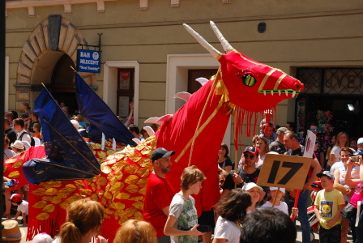

Baza Smokow
| Nazwa | Dlugosc | Szerokosc |
|---|
Opisy Smokow
- Smok Czerwony
- Pochodzi z Chin. Ma 1000 lat. zywi sie mniejszymi zwierzetami. Posiada luski cenne na rynkach wschodnich do wyrabiania lekarstw. Jest dziki i grozny.
- Smok Zielony
- Pochodzi z Bulgarii. Ma 10000 lat. zywi sie mniejszymi zwierzetami, ale tylko w kolorze zielonym. Jest kosmaty. Z siersci zgubionej przez niego, tka sie najdrozsze materialy.
- Smok niebieski
- Pochodzi z Francji. Ma 100 lat. zywi sie owocami morza. Jest natchnieniem dla najlepszych malarzy. Czesto im pozuje. Smok ten jest przyjacielem ludzi i czasami im pomaga. Jest jednak przny i nie lubi sie przepracowywac.
